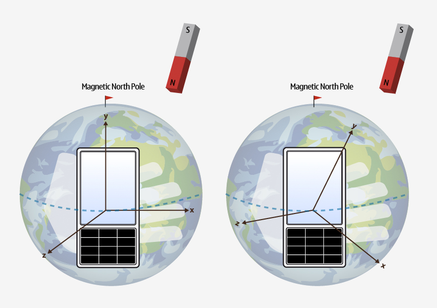

QMagnetometerReading¶
Synopsis¶
Functions¶
- def
calibrationLevel() - def
setCalibrationLevel(calibrationLevel) - def
setX(x) - def
setY(y) - def
setZ(z) - def
x() - def
y() - def
z()
Detailed Description¶
ThePySide2.QtSensors.QMagnetometerReadingclass represents one reading from the magnetometer.
QMagnetometerReading Units¶
The magnetometer returns magnetic flux density values along 3 axes. The scale of the values is teslas. The axes are arranged as follows.

The magnetometer can report on either raw magnetic flux values or geomagnetic flux values. By default it returns raw magnetic flux values. The
QMagnetometer.returnGeoValuesproperty must be set to return geomagnetic flux values.The primary difference between raw and geomagnetic values is that extra processing is done to eliminate local magnetic interference from the geomagnetic values so they represent only the effect of the Earth’s magnetic field. This process is not perfect and the accuracy of each reading may change.
The image below shows the difference between geomagnetic (on the left) and raw (on the right) readings for a phone that is being subjected to magnetic interference.
The accuracy of each reading is measured as a number from 0 to 1. A value of 1 is the highest level that the device can support and 0 is the worst.
Calibration¶
If the device is reporting low accuracy, then calibration might be needed before acceptable measurements can be provided. Basic calibration can usually be done by either rotating your device in a figure of eight, or by rotating the device along each of its three axes. For more information, check your device’s documentation on how to calibrate the magnetic sensor.
-
class
PySide2.QtSensors.QMagnetometerReading(parent)¶ Parameters: parent – PySide2.QtCore.QObject
-
PySide2.QtSensors.QMagnetometerReading.calibrationLevel()¶ Return type: PySide2.QtCore.qreal
-
PySide2.QtSensors.QMagnetometerReading.setCalibrationLevel(calibrationLevel)¶ Parameters: calibrationLevel – PySide2.QtCore.qrealSets the accuracy of the reading to
calibrationLevel.
-
PySide2.QtSensors.QMagnetometerReading.setX(x)¶ Parameters: x – PySide2.QtCore.qrealSets the raw magnetic flux density on the X axis to
x.
-
PySide2.QtSensors.QMagnetometerReading.setY(y)¶ Parameters: y – PySide2.QtCore.qrealSets the raw magnetic flux density on the Y axis to
y.
-
PySide2.QtSensors.QMagnetometerReading.setZ(z)¶ Parameters: z – PySide2.QtCore.qrealSets the raw magnetic flux density on the Z axis to
z.
-
PySide2.QtSensors.QMagnetometerReading.x()¶ Return type: PySide2.QtCore.qreal
-
PySide2.QtSensors.QMagnetometerReading.y()¶ Return type: PySide2.QtCore.qreal
-
PySide2.QtSensors.QMagnetometerReading.z()¶ Return type: PySide2.QtCore.qreal
© 2018 The Qt Company Ltd. Documentation contributions included herein are the copyrights of their respective owners. The documentation provided herein is licensed under the terms of the GNU Free Documentation License version 1.3 as published by the Free Software Foundation. Qt and respective logos are trademarks of The Qt Company Ltd. in Finland and/or other countries worldwide. All other trademarks are property of their respective owners.